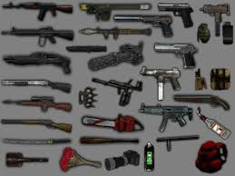

- ARMAS
Munición infinita
¡No más preocupaciones por la munición!
Con este truco, tendrás munición infinita en tu juego, lo que te permitirá disfrutar de una experiencia sin límites. Ya no tendrás que preocuparte por quedarte sin balas en medio de una pelea. Usa el código AFASGEG para activar este truco y ¡prepárate para disparar sin cesar!
- ARMAS
Pack de armas 1
¡Accede a todas las armas desde el principio!
Este pack incluye un conjunto completo de armas, perfectas para comenzar tu aventura en GTA San Andreas con el pie derecho. Desde pistolas hasta rifles de asalto, tendrás todo lo necesario para enfrentarte a cualquier desafío. Usa el código KJKSZPJ para desbloquearlo.
- ARMAS
Pack de armas 2
Un arsenal de poderosas armas
¿Necesitas más poder? Con el Pack de Armas 2 podrás hacer frente a cualquier enemigo con una variedad impresionante de armamento. Desde granadas hasta lanzacohetes, tendrás a tu disposición todo lo que necesites. Introduce el código NOAOFHI y disfruta del caos.
- ARMAS
Pack de armas 3
Más armas, más diversión
Este pack incluye una selección de armas muy poderosas, perfectas para quienes disfrutan del combate intenso en GTA San Andreas. ¡Nada te detendrá! Usa el código AFOKFDF para obtenerlo.
- ARMAS
Pack de armas 4
El último pack que necesitas

Con el Pack de Armas 4, tendrás acceso a todas las armas necesarias para ser el más fuerte en el juego. Ya no habrá enemigo que te haga frente. Usa el código PACKDFO y prepara tu arsenal.
Hola,
bienvenido a la guia definitiva de trucos en GTA San Andreas
Los trucos de GTA San Andreas para PC son la forma ideal de disfrutar del juego de Rockstar a tope desde una óptica distinta y más loca si cabe, ya no sólo por cosas como salud infinita, ganar dinero infinito, conseguir el tanque o hacerte con todas las armas disponibles y que el juego sea más fácil, también para disfrutarlo el doble.